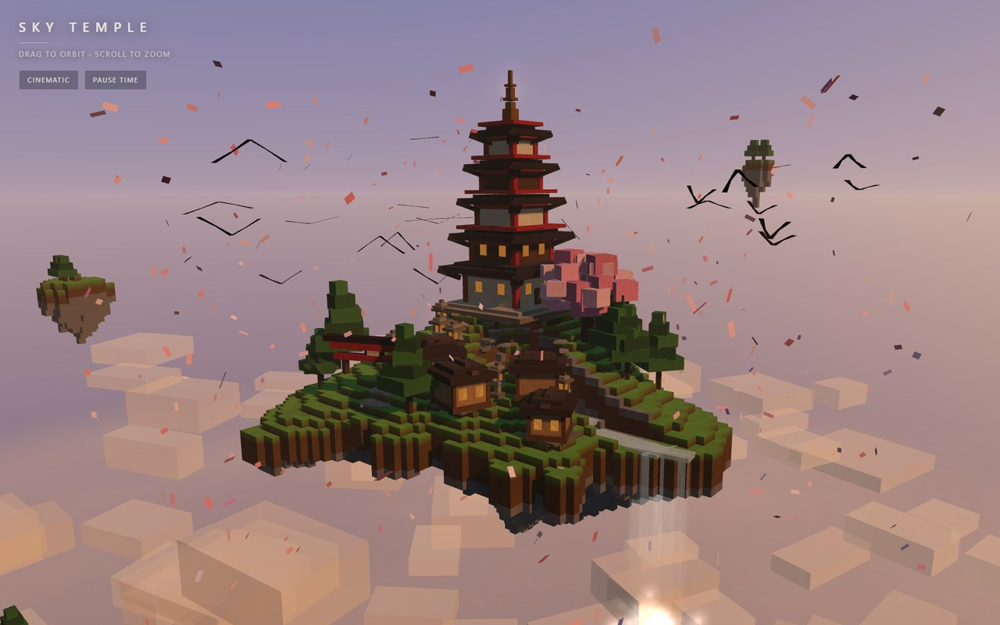

One-shot demo gallery
Browser demos written by AI models running on my own hardware — one prompt each, no cloud services, no build step. Open a benchmark to read the prompt it was built from and run every build it produced.
01
The bench
One message per test — no follow-ups, no fixes. Every file was opened and checked in a browser before it earned a place here.

Sky Temple
Qwen3.8-Flash-Next + 27B · 3 builds · Oct 2026
A floating Japanese island in cube art — a five-tier pagoda, torii gate, waterfall, drifting petals and a 60-second day/night cycle.
prompt + 3 builds →

Living City
Qwen3.8-Flash-Next · 1 build · Oct 2026
A city that builds itself at load — rush-hour traffic, working traffic lights, a river with bridges and a 90-second day/night cycle.
prompt + build →

Neon Drift
Qwen3.8-Flash-Next · 1 build · Oct 2026
A playable synthwave racer — an endless curving highway, boost meter, near-miss bonuses and a fully synthesised soundtrack.
prompt + build →

Pulse Engine
Qwen3.8-Flash-Next · 1 build · Oct 2026
A generative instrument — a drum machine and synth that compose on their own while a particle galaxy pulses on the beat.
prompt + build →

Cloth Lab
Qwen3.8-Flash-Next · 1 build · Oct 2026
A from-scratch cloth physics lab — drag it, tear it, switch on the wind, drop balls on it. The solver is hand-written; no physics library.
prompt + build →